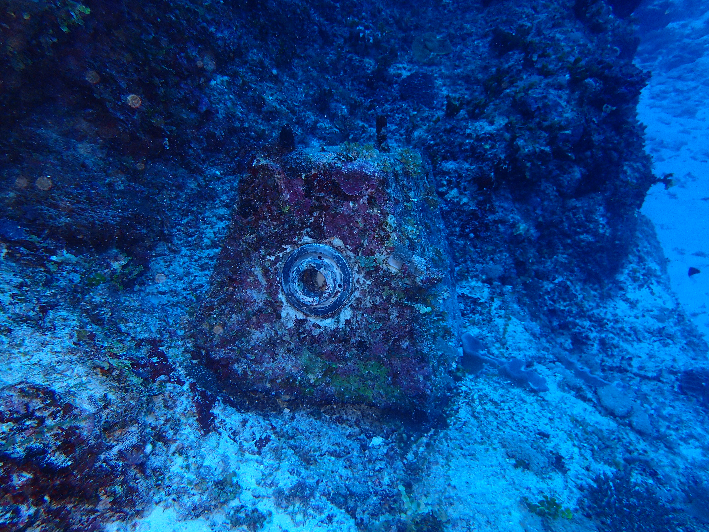
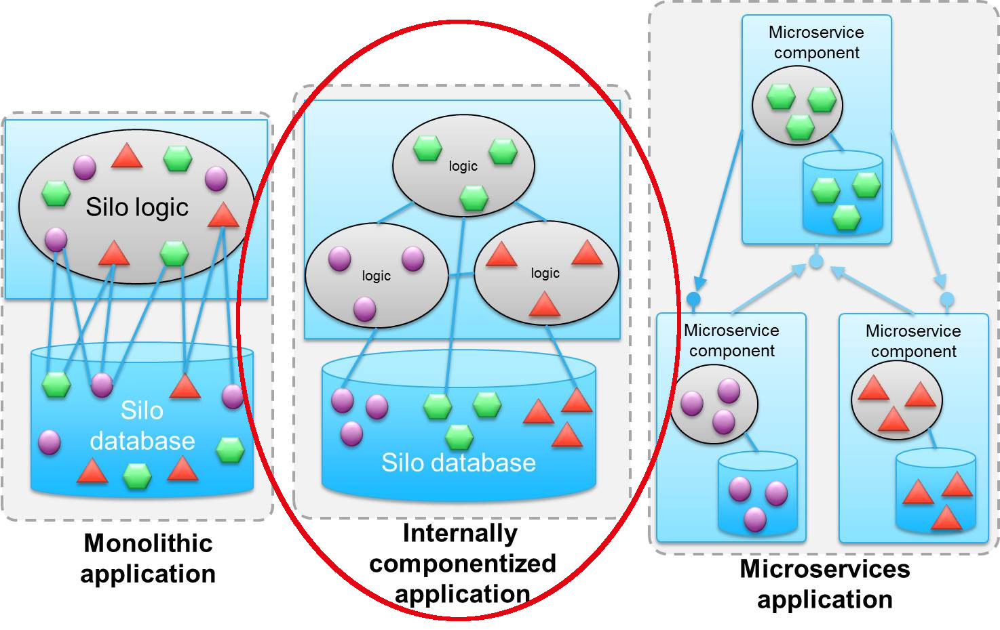
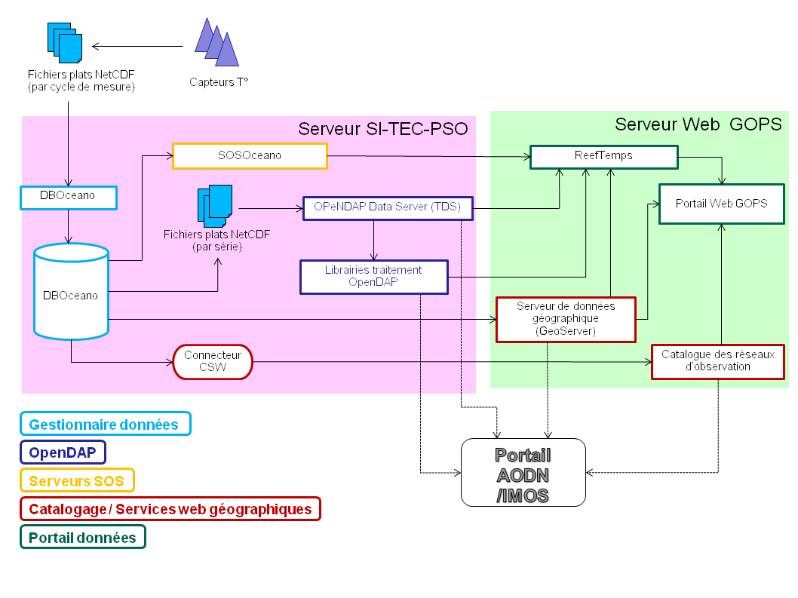
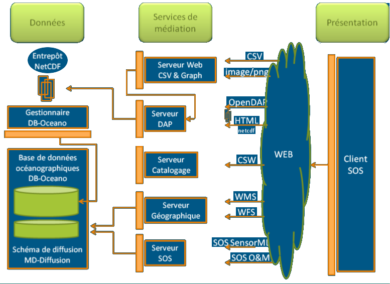

Your browser doesn't support the features required by impress.js, so you are presented with a simplified version of this presentation.
For the best experience please use the latest Chrome, Safari, or Firefox 10.
Docker en production
Exemple d’une application de valorisation de données issues de capteurs
Sylvie Fiat - IRD - GOPS
REEFTEMPS
Réseau de capteurs de température, pression, salinité dans le domaine côtier du Pacifique Sud, Ouest et Sud Ouest
Coordinateur réseau: Bernard Pelletier - Chef de projet SI: Régis Hocdé – Responsable exploitation SI: Sylvie Fiat -
Responsable données: David Varillon
& Equipe projet : Jacques Grelet, Adrien Cheype, Guillaume Brissebrat, Andry Andriatiana & Collaborateurs prestataires
Guyennon, 2010
Bientôt 50 années de mesures...
Et en permanence plus de 70 capteurs en cours d'utilisation...
Ce qui nous intéresse aujourd'hui
Portage de l'application de gestion associée, multi-composants, sous docker
1 Analyse de la structure
2 Préparer les évolutions
3 Décomposer les briques logiques
- - Base de données - SQL - Postgres/Postgis
- - Application de gestion - Java/Tomcat
- - Serveur de données grillées Thredds - OpenDAP - Java/Tomcat
- - Serveur de données géographique Geoserver - WMS, WFS - Java/Tomcat
- - Serveur de données de capteurs 52°North - SOS - Java/Tomcat
- - Catalogue de métadonnées GeoNetwork - CSW - Java/Tomcat
- - Service web python - CSW, PNG/JPG - Python/Webpy
- - Portail web HTML5/CSS/Javascript
4 Choisir les images Docker

4 Choisir les images Docker - RAPPEL
- Un container par brique logique
- Privilégier les images officielles
- Vérifier le Dockerfile
- Eviter les images sans github associé
- Préférer une image légère
- Plébiscitée: beaucoup de stars/downloads/forks dans Dockerhub et Github
- Maintenue : voir les dates de dernière mise à jour, l'état des tickets
- Vérifier que vos spécifications sont bien vérifiées !
4 Choisir les images Docker
- - Base de données Postgres/Postgis + ssh
Dockerfile# Pas d'image officielle de Postgres
# avec Postgis implémenté
FROM mdillon/postgis:9.5
MAINTAINER GOPS
ARG UNIX_USER
ARG UNIX_PASSWORD
ADD init-ssh.sh /init-ssh-service.sh
# Installation de OpenSSH
RUN apt-get update & \
apt-get install -y openssh-server
RUN chmod 755 /init-ssh-service.sh
ENTRYPOINT ./init-ssh-service.sh ; &\
./docker-entrypoint.sh postgres
docker-compose.yml# PostgreSQL Postgis database
sitecpsodb:
hostname: sitecpsodb
image: reeftemps/postgres_ssh
environment:
- POSTGRES_USER=docker
- POSTGRES_PASSWORD=docker
- POSTGRES_DB=database
4 Choisir les images Docker
- - Application de gestion - Java/Tomcat + ssh + data volume
Dockerfile# Image Tomcat officielle
# Surcharge SSH
FROM tomcat:8.0-jre8
MAINTAINER GOPS
# Installation de OpenSSH
RUN apt-get update & \
apt-get install -y openssh-server
# Expose port 80
EXPOSE 80
docker-compose.yml# Application de gestion des données
sitecpsoweb:
hostname: sitecpsoweb
image: reeftemps/tomcat_ssh
# Montage d'un data volume pour les données à plat
volumes:
- ./data:/dboceano/data
- ./log:/dboceano/log
environment:
- CATALINA_OPTS=-Xmx4096m -Xms2048m -XX:SoftRefLRUPolicyMSPerMB=1 -XX:MaxPermSize=2048m -XX:-UseGCOverheadLimit -Djava.awt.headless=true
- POSTGRES_PASSWORD=docker
- POSTGRES_DB=database
links:
- sitecpsodb:sitecpsodb
4 Choisir les images Docker
- - Serveur de données grillées Thredds - Java/Tomcat
docker-compose.yml# Serveur de données grillées THREDDS
sitecpsodap:
hostname: sitecpsodap
# L'éditeur fourni une image Docker
image: axiom/docker-thredds:4.6.6
volumes:
- ./data:/dboceano/data
- ./log:/thredds/log
4 Choisir les images Docker
- - Serveur de données géographique Geoserver - Java/Tomcat
Dockerfile# Image Tomcat officielle
# Surcharge SSH
FROM tomcat:8.0-jre8
MAINTAINER GOPS
ENV GEOSERVER_VERSION 2.9.1
# Installation de la librairie jai
RUN wget and install jai libs
# Installation de Geoserver
RUN wget and install geoserver
# Installation de CorsFilter
RUN chmod +x enable-cors.sh && ./enable-cors.sh
CMS $GEOSERVER_HOME/bin/startup.sh
# Expose port 80
EXPOSE 80
docker-compose.yml# Application de gestion des données
sitecpsogeo:
hostname: sitecpsogeo
image: reeftemps/docker-geoserver
links:
- sitecpsodb:sitecpsodb
4 Choisir les images Docker
- - Serveur de données de capteurs 52°North - Java/Tomcat
docker-compose.yml# SOS Restful 52 North
sitecpsosos:
hostname: sitecpsosos
# L'éditeur fourni une image Docker
image: 52north/sos:4.3.8
environment:
- POSTGRES_DB_USER=docker
- POSTGRES_DB_PASSWORD=docker
links:
- sitecpsodb:sitecpsodb
4 Choisir les images Docker
- - Catalogue de métadonnées GeoNetwork - Java/Tomcat
docker-compose.yml# Geonetwork
sitecpsogndb:
hostname: sitecpsogndb
image: geocat/geonetwork:3.2.0-postgres
environment:
- POSTGRES_USER=docker
- POSTGRES_PASSWORD=docker
- POSTGRES_DB=geonetwork
sitecpsogn:
hostname: sitecpsogn
# L'éditeur fourni une image Docker
image: geocat/geonetwork:3.2.0-postgres
links:
- sitecpsogndb:sitecpsogndb
4 Choisir les images Docker
- - Service web python - Python/Webpy
Dockerfile# Image Apache docker officielle
FROM docker.io/httpd
MAINTAINER GOPS
RUN apt-get update
# Installation de Python
RUN apt-get install -y python-dev liba...
# Installation de webpy
RUN pip install web.py numpy h5py...
# Copy config and python script to be deployed
COPY httpd.conf /apache2/conf/httpd.conf
COPY dap2graph.py dap2csv.py
/var/www/webpy-app/
docker-compose.yml# Application de gestion des données
sitecpsopy:
hostname: sitecpsopy
image: reeftemps/httpd_python
volumes:
- sitecpsodb:sitecpsodb
4 Choisir les images Docker
- - Portail web Java/Tomcat
docker-compose.yml# Interface d'affichage des données
sitecpsows:
hostname: sitecpsows
image: reeftemps/tomcat_ssh
5 Configurer tout ça ensemble
Utilisé comme un revert-proxy
haproxy.cfgglobal
log 127.0.0.1
defaults
mode http
timeout connect 5000
frontend http-in
bind *:80
acl is_geonetwork path_beg -i /geonetwork
use_backend sitecpsogeo_srv if is_geoserver
backend sitecpsogeo_srv
server sitecpsogeo_srv sitecpsogeo:8080